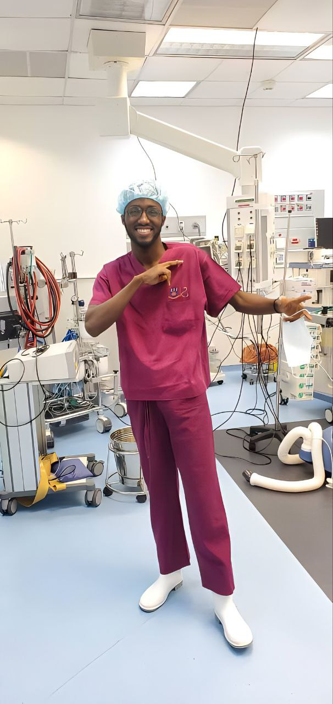
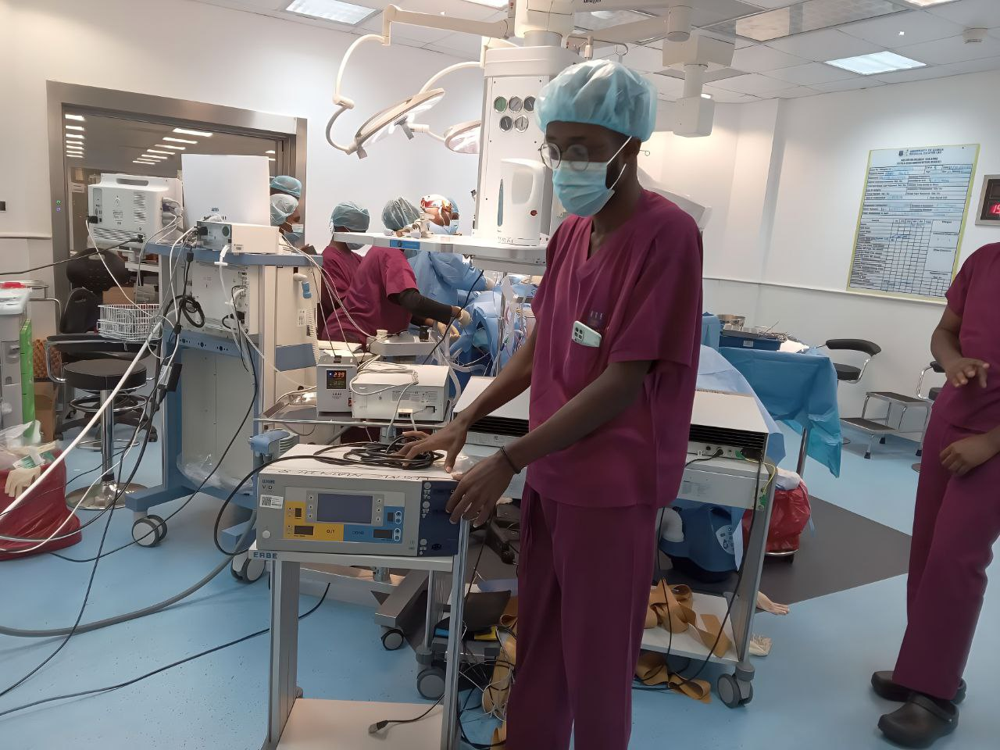
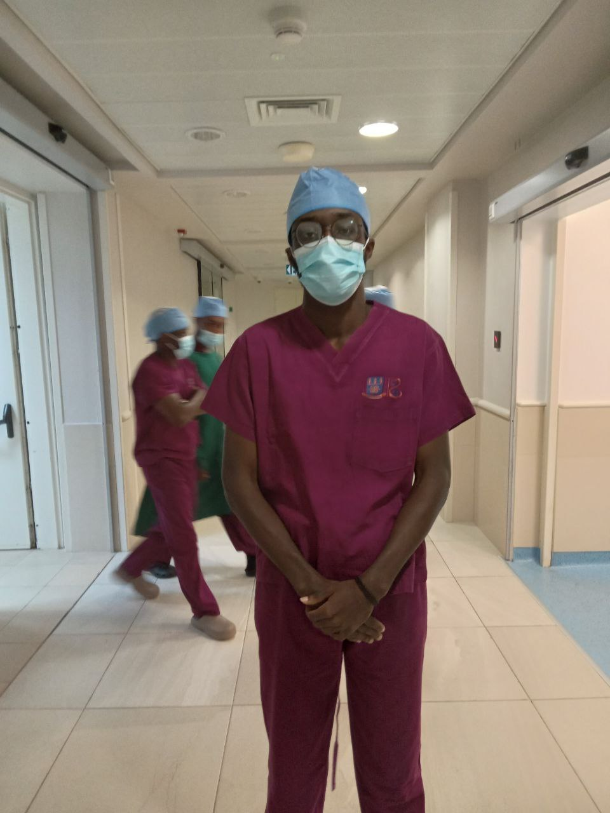
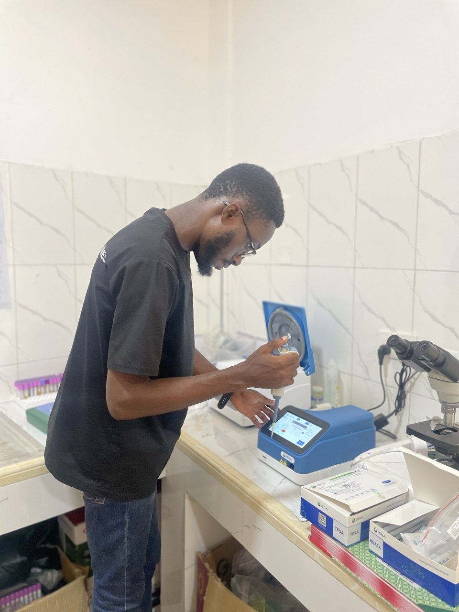
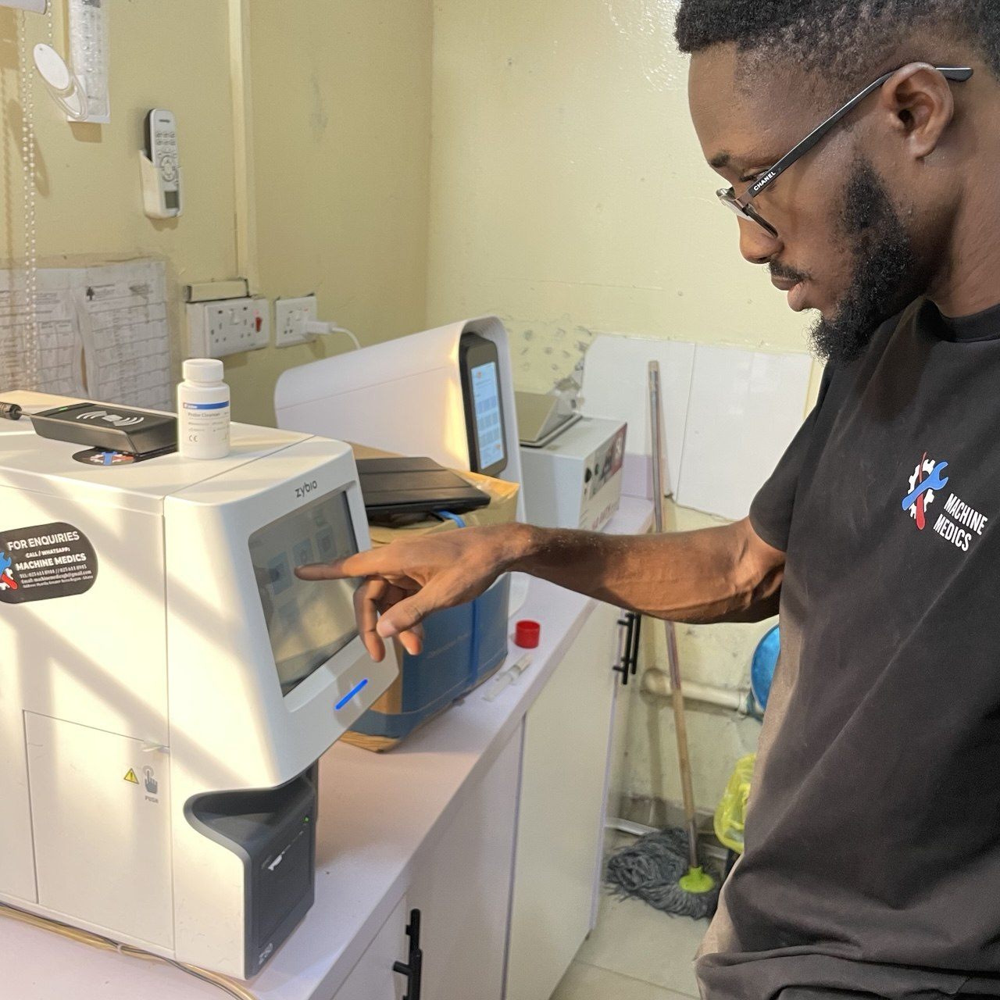
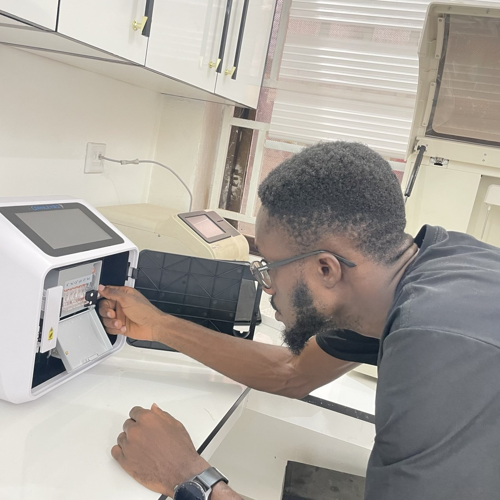
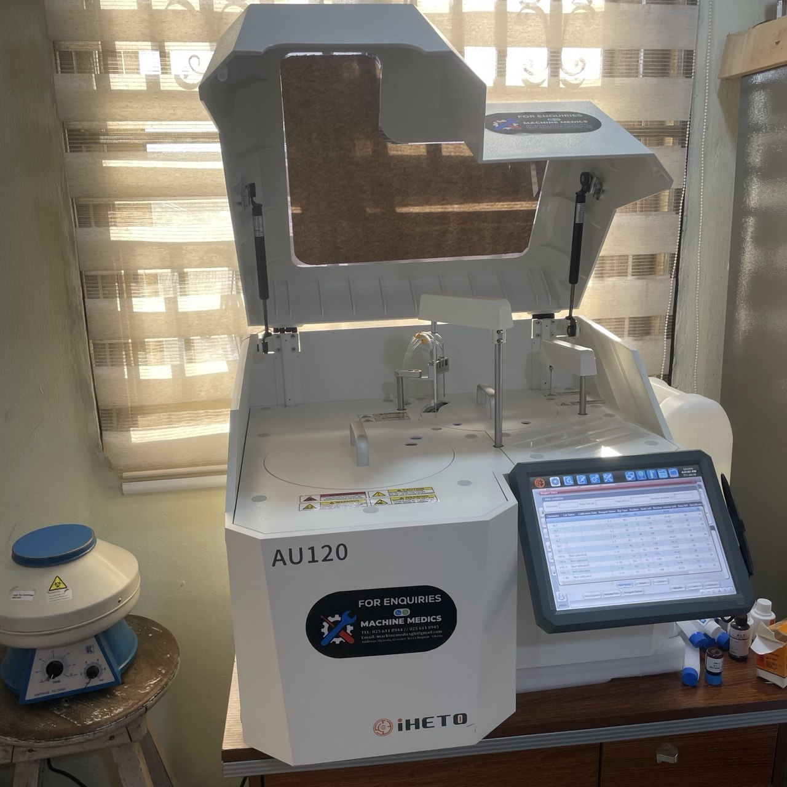
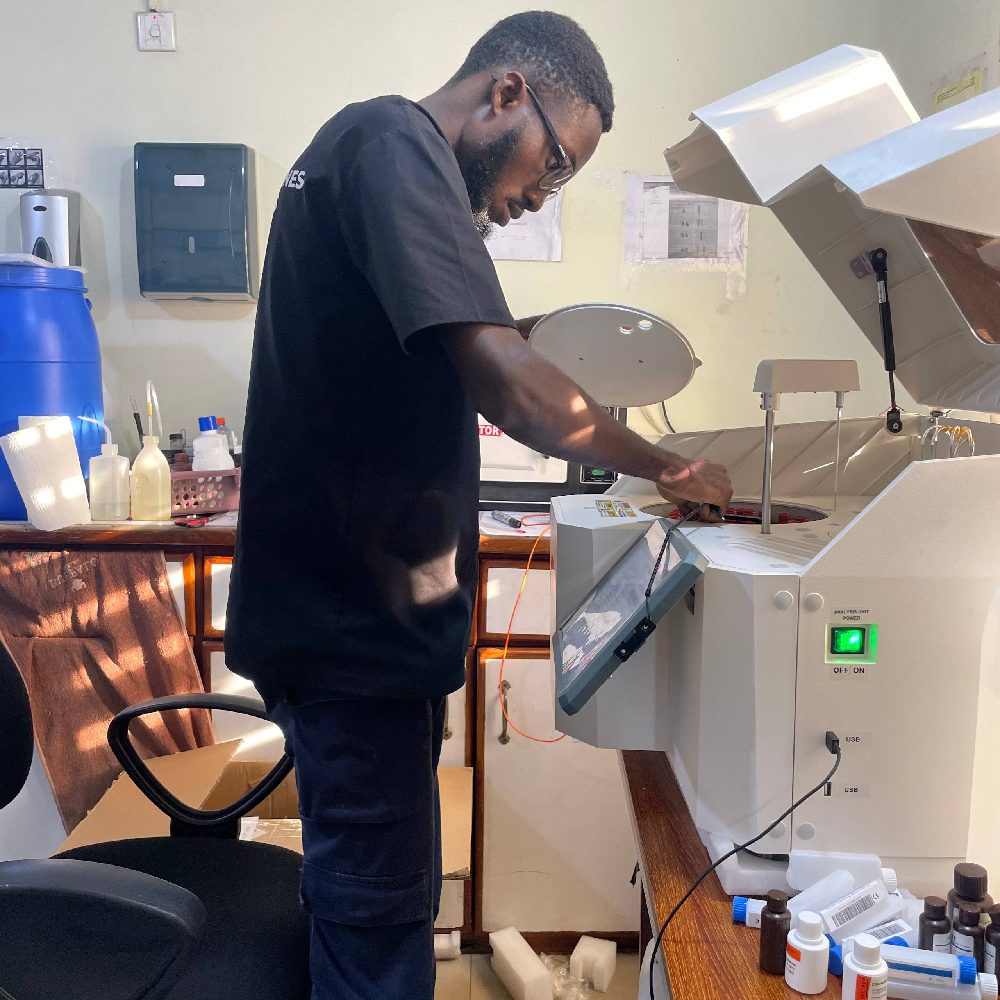

clinical engineering
Field service, device installation, and healthcare technology management across Ghana.
Skyler Healthcare — Field Service & Sales Engineer (Freelance) · May 2026 – Present
Installed and commissioned haematology analysers. Performed preventive and corrective maintenance, maintaining 100% device uptime. Delivered hands-on clinical training and led technical presentations during tenders.
Machine Medics — Field Service & Sales Engineer (Contract) · Jan 2026 – May 2026
Installed and commissioned 15+ immunoassay analysers, ECG machines, and chemistry analysers. Managed end-to-end technical service operations and key accounts. Resolved open field cases and maintained operational continuity.
Sysmex West & Central Africa — Field Service Engineer (Asst.) · Oct 2024 – Jan 2026
Conducted site readiness assessments for 20+ haematology and urinalysis analysers, reducing setup delays by 30%. Installed and commissioned diagnostic systems. Carried out monthly preventive maintenance, sustaining 95%+ device uptime. Trained clinical and laboratory staff.
UGMC & Ministry of Health — Biomedical Engineering Intern
Performed routine maintenance on 20+ medical devices monthly, reducing failure rates by 25%. Repaired 10+ critical devices. Tested and validated 30+ medical devices across 10 hospitals, ensuring 100% compliance.








